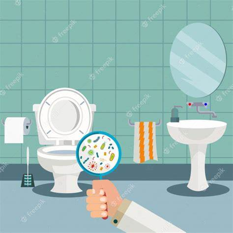

PASO 1. DETERMINACIÓN DEL PROBLEMA
En el blog se desarrollará y enlistará cada problema en este paso 1.
• Observación del entorno
Cuidado en los sanitarios escolares del CBT Albert Einstein
Noa emos percatado que la mayoría de las veces en los baños no se encuentra papel sanitario, ni agua en los escusados por lo cual genera que los alumnos no podremos tener la suficiente limpieza en los sanitarios. En ocasiones se han visto los inodoros tapados y sucios, al haber una llave de agua en la pared q a veces llega a gotear, genera que los estudiantes manchen el piso con la tierra en sus zapatos generando logo en el mismo.
Al inicio de las clases los sanitarios se encuentran limpios, pero por las razones anteriormente mencionadas, causan que al finalizar queden muy sucios e insalubres.
• Elección ¿Bajo qué criterios?
Experiencia personal
• Búsqueda de información
¿Donde?
En la misma institución e internet
•¿Cuanta?
Entrevistas y encuestas, al igual q investigación en internet
•¿Para qué?
Para mejorar la calidad de los sanitarios
Uno de los problemas más comunes en los planteles educativos es la falta de higiene en los sanitarios, lo que causa molestias y desagrado entre los alumnos. En muchas ocasiones, los sanitarios se encuentran sucios debido a la falta de mantenimiento o la falta de respeto de algunos alumnos hacia el personal administrativo y sus compañeros. Esto puede tener consecuencias negativas para la salud y el bienestar de toda la comunidad escolar, incluyendo a estudiantes, profesores y directivos.
Este problema tiene diversas causas, tanto por parte de los alumnos como de la institución educativa. Por un lado, algunos estudiantes pueden tener hábitos poco higiénicos o no ser conscientes de la importancia de mantener los sanitarios limpios. Por otro lado, la institución puede no proporcionar los recursos necesarios para mantener los sanitarios en buen estado o no establecer normas claras para su uso y mantenimiento.
Es necesario tomar medidas para abordar este problema y garantizar que los sanitarios en los planteles educativos sean espacios limpios y seguros para todos. Esto puede incluir la realización de campañas de concientización sobre la importancia de la higiene personal y el cuidado de los sanitarios, así como la implementación de normas claras y eficaces para su mantenimiento y limpieza regular. Además, se pueden establecer medidas de sanción para aquellos alumnos que no cumplan con las normas de higiene y respeto hacia los demás.

FUENTES RESUMIDAS
Fuente 1:
El acceso a agua y saneamiento es un derecho humano indispensable. Las instituciones, deben de asegurar este mínimo, para poder garantizar un mínimo desarrollo estable y bueno para la población estudiantil Cuando no se cuenta con los servicios necesarios de agua, higiene y saneamiento, se da un gran aumento de enfermedades que puedan afectar la vida académica de los alumnos, tales como faltar a clase, faltar con actividades en clase, faltar con tareas, etc. Principalmente Sólo un 62% de los planteles educativos en México disponían de agua todos los días de la semana, el 19% carecía de inodoros suficientes para los estudiantes y el 58% no ofrecía agua potable, esto da la provocación de que solo el 40% de los baños escolares cuentan con condiciones adecuadas de limpieza y seguridad para niñas, niños y adolescentes. Por otro lado, se muestra que las escuelas que no cuentan con agua potable por alguna razón se aumenta significativamente, el consumo de bebidas azucaradas, lo que provoca otros problemas como: obesidad, diabetes, etc. Existen organizaciones como UNICEF que se enfocan a solucionar estos problemas enfocada a mejorar, los servicios de agua, higiene y saneamiento en escuelas de Chihuahua y Guerrero, en beneficio de casi 10,000 escuelas. Con el objetivo de aumentar el consumo de agua potable en las escuelas, incidir en la disminución de la obesidad y mejorar la salubridad de los estudiantes. La creación de diversos materiales didácticos permiten que estudiantes y maestros crear ambientes escolares saludables, todos estos proporcionados por la UNICEF, propagando las prácticas de higiene y cuidado personal para, el desarrollo sustentable de los alumnos y el mejoramiento de el rendimiento escolar en México. Aplicar estas prácticas no solo en Chihuahua y Guerrero si no en todo el estado mejoraría la higiene de los baños públicos.
Fuente 2:
Los sanitarios/baños/escusados/inodoros/retretes de las escuelas son “artículos” de primera necesidad y forman parte de los derechos de los niños a recibir educación y salud, que tendría que ser de calidad. Que el baño cumpla con las condiciones mínimas del servicio a los niños es un reto que todas las escuelas enfrentan, por la complejidad que implica mantener limpio y en buenas condiciones este espacio público y de uso frecuente para una amplia población escolar El censo incluyó el tema de los baños en el numeral II.10 “Inmuebles con escuelas construidas por entidad federativa de administración, según sostenimiento y disponibilidad de baño o sanitario”. 2 se reportaron a nivel nacional 171,851 escuelas y en el estado de Jalisco 7,663. Las instituciones públicas del estado que sí tienen el “Servicio de baño o sanitario” fueron 7,406, que representan 96.6% del total estatal. Hay un porcentaje de alrededor de 3.0% que no cuenta con este servicio en el nivel estatal y de 8.9% en el nacional. Las escuelas rurales son las últimas en tener completa la infraestructura esperada desde la visión del censo. En la transición hay mucho más que hacer que construir baños, no es suficiente tenerlos. Si bien es un avance contar con baños en las escuelas, tenerlos, en sí mismo no resuelve el tema de la atención de calidad a los niños; hay otros factores que se tienen que atender. Un baño, como infraestructura física, trae consigo otro tipo de demandas como agua, papel, limpieza, que, si no se cuidan, nuevamente vulneran el derecho a la educación de los niños, así como su derecho a la salud. Contar con baños es una oportunidad para educar desde la higiene y la salud de los niños y con ello, atender sus necesidades básicas como parte de las obligaciones del Estado.
Fuente 3:
Los baños escolares por ser de uso común, siempre será mayor el riesgo de infecciones, además del mal estado en que se encuentran en la mayoría de las escuelas, la falta de agua es un factor importantísimo para los focos de infección. Es de suma importancia el papel que juegan los padres en cuanto a este tema, tanto a los niños como a las niñas deben informarles sobre las medidas de higiene que deben tener. Pudiendo esto causar en los niños diarreas y enfermedades respiratorias, que impiden su aprendizaje y los llevan a abandonar la escuela. En el caso de las niñas, la falta de las condiciones necesarias para su higiene durante la menstruación también las obliga a desertar. Los colegios deben prestarle atención a esta situación, porque la principal causa de morbilidad y mortalidad infantil y juvenil se debe a las enfermedades relacionadas con el agua y el riesgo que produce el mal manejo de los excrementos humanos. Según estudios realizados por Unicef, el mal estado y manejo de los baños hace que estos sean un verdadero foco de infecciones. Un solo gramo de heces puede contener 10 millones de virus, un millón de bacterias, mil parásitos y 100 huevitos de parásitos
****Link de descarga del archivo****
Bibliografías
Autor: UNICEF
Fecha de elaboración: 23 de septiembre de 2020
Consultado: 19 de marzo de 2023
Agua, higiene y saneamiento. Niños, niñas y adolescentes tienen derecho a vivir en un entorno limpio y con acceso a agua potable
Autor: Adriana Piedad García Herrera
Fecha de elaboración: 20 de Septiembre de 2017
Consultado: 19 de Marzo de 2023
Una mirada al derecho a la educación, a través de los baños en las escuelas
Autor: Compañía Venezolana de Cerámica, C.A.
Fecha: 20 de Septiembre de 2022
Consultado: 19 de Marzo de 2023
¡LOS BAÑOS ESCOLARES Y SUS RIESGOS!